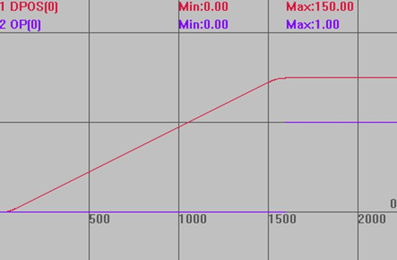
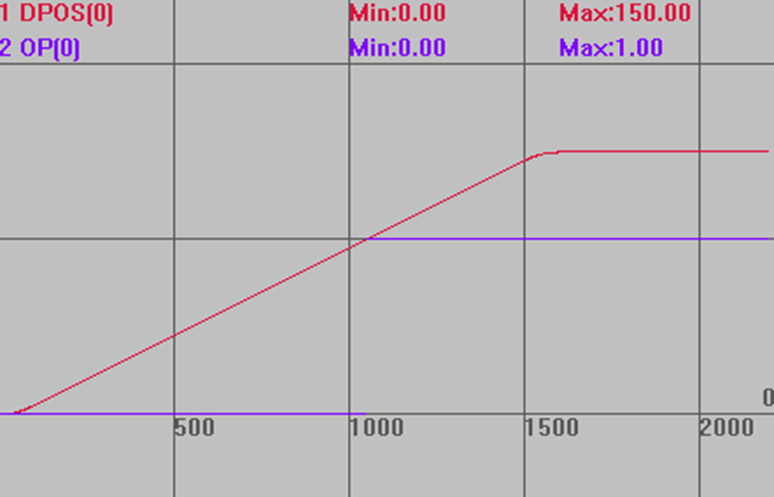

|
类型 |
语法指令 |
|
描述 |
等待BASE轴运动缓冲空，此命令会阻塞不执行后面的程序。 缓冲区最后一个运动可以正确执行，同时程序向下扫描。 等效于WAIT UNTIL LOADED，LOADED作为轴参数，支持轴参数的语法。 |
|
语法 |
WAIT LOADED |
|
适用控制器 |
通用 |
|
例子 |
与WAIT IDLE的区别 BASE(0) UNITS=100 DPOS=0 SPEED=100 ACCEL=1000 MERGE=1 TRIGGER MOVE(100) '当前运动 MOVE(50) '缓冲运动，此时缓冲区只有这一条运动 '当本条运动执行时，缓冲区就已经清空 WAIT IDLE '使用wait idle时，要等到所有运动完成才能往下执行 OP(0,ON) '打开op0
运动轨迹 DPOS(0)垂直刻度100 OP(0)垂直刻度1 
WAIT LOADED '使用wait loaded时，运动缓冲空即可往下执行 OP(0,ON)  |